|
|
Folk Arts > Dough
|
Source of picture [Note 6] |
Teacher Huang and Dough
Teacher Huang has been working with dough since he was a child. From the “hens and dogs” of Grandma Huang to the folk arts his older brother is working hard to develop, dough has existed around Teacher Huang. Now, he is helping to develop this skill by using the most traditional materials and simplest way to teach people and students.
Dough Art” is a technique that mostly uses the hand. This is an act of art that uses hands to mold dough into all kinds of works. It is a traditional skill containing the Chinese national color. It came from the north of China, where people made the flour locally and produced it into dough, and then used hands to mold the dough into all kinds of people, flowers, birds, fish, and other animals for offerings of religious ceremonies. People also played with or ate the dough work. Most people who carried these skills were cake-making workers in Chinese bakeries, or some itinerant entertaining vendors. Since these people’s social positions were low in the past, they were all referred to as a “Dough Man.
Later, the dough art was passed to the south of China because Jiang rice (sticky rice) produced in the south was stickier, and fitted the needs of molding dough very well. People added some sticky rice powder into the dough-making procedure. Therefore, people who worked on molding art creations are also called “Jiang Rice Man”. Academically, we call this skill “Rice Sculpting”, and call people who work on “Rice Sculpture” creations, “Jiang Rice Sculptor Man” [Note 4]
Development of Dough in Taiwan
In the earlier days, dough was called “sticky rice doll” and was edible. Each of the dolls was made with sticky rice skin and stuffing (such as sweet potato), and then a bamboo stick was added. They used a wooden model to make these dolls into different animal shapes. Another kind sculpted colored sticky rice into simple shapes, which were eaten with dark brown sugar. By the differences of modeling and folk customs, dough can be divided into three different developing systems in the north, middle and south of Taiwan. The development in middle Taiwan was centered in Lugang. Lugang was a prosperous trading port in the early ages, and accepted new things coming from the outside very often, so it became the origin of dough. Dough dolls in middle Taiwan were used for festivals. They usually molded some chicken, duck, fish and meat for offerings. Specifically, during midwinter, every family would mold some animal dough on wooden boards or cardboard for offerings, and would eat these as rice dumpling after worship. Therefore, people in middle Taiwan called dough dolls, “hen, dog, and duck”. Also, people molded dough dolls for kids’ toys. In northern Taiwan, since the city streets were much busier, the development of dough was more commercialized. Many molding men would mold lots of beautiful dough dolls, in festival days or night markets, to attract customers. Besides for being edible, these dough dolls were made more for fashion, and were improved. In southern Taiwan, their custom was simpler, and the weather was hotter so dough dolls grew mold and cracked easily. They mostly used salted duck eggs to mold the dough dolls. They also added various shapes of animals and vegetables in the head and tail part to use on offering tables for decoration. Using salted duck eggs in the body would save flour. Also, after the dough dried out, the salted duck eggs could be used for food, so customers felt it was more valuable. Therefore, dough dolls were also called “Duck egg dolls” in southern Taiwan. Up to today, the production and preservation of materials for dough have been improved. This helps to prevents the work from going moldy and getting cracked for long periods of time, and can also promote the value of work more effectively. [Note 5]
The Origin of Dough Ancestor
In the age of the Three Kingdoms, Ge-liang Zhu led an army to attack the Southern Man, and caught and released their general Huo Meng seven times. Huo Meng finally surrendered. Zhu led the army home and came to Lushui River. Just as the army was ready to cross the river, a big storm suddenly came and hit them, surging the wave for hundreds of feet so that the army was not able to cross the river. Zhu called Meng in, and asked him for the reason of the occurrence; Meng said: “When two troops engage in war, many dead soldiers can not go home to meet their families, so they make a wave here to obstruct your way home. If your army wants to cross the river smoothly, you need to sacrifice forty-nine human heads to offer to the river. The wave will then be gone.” Zhu thought that there was no peaceful moment in war, and killing could not be avoided, but how could he kill an additional 49 people? He then came up with an idea to order the cooks to mold 49 heads using rice and flour as skin, and beef and horsemeat as stuffing. After calculating the right moment, they set up a worship table, and offered the doll heads to the river. The wave suddenly calmed down and the sky was cloudless, so the big troops could cross the river. Therefore, a molding dough man is also called “Jiang Rice Man”, and later generations honored Zhu, the ancestor of the molding dough man. [Note 2]
Molding Skills:
The traditional molding dough technique was modified and assembled from few basic techniques. It is not as difficult as we thought. There are four basic shapes including round shape, oval shape, water-drop shape, and fusiform shape. Beginners should practice hard on these shapes and learn how to utilize tools. The quality of dough dolls is decided by molding technique and tools. Molding dough man use hands to mold, twist, rub, and lift the dough, and use various tool to click, cut, carve, draw, and mold the dough. Suddenly a vivid person’s shape is formed. In addition to being skillful and experienced, we need to be creative. The tools used are a Chinese writing brush for drawing details of the doll, scissors for cutting out all flowers, leaves, hands and legs, and a bamboo stick for the supporting work frame. [Note 3]
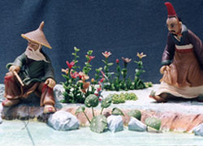 |
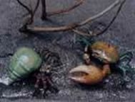 |
| Source of picture [Note 6] |
Source of picture [Note 6] |
Handiwork Technique: [Note 4]
Rub: Use a combination of both hands or use hands on other planes to fold and push the dough from different angles. Repeat this a few times until all materials mix evenly and closely integrate together. This will soften the dough and increase its stickiness and plasticity. |
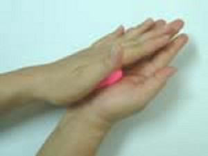 |
| Twist: Fold both palms or use palms from other planes to twist the dough to be round, sharp, thin, and long, so that its surface will be meticulous and smooth. |
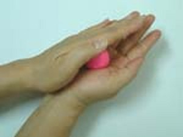 |
| Press: Put the fashioned dough on one palm or other plane and press it with the palm. Press the dough from different angles and different strengths to reach the figure we need. |
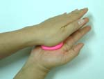 |
| Mold: Put the fashioned dough on a hand, and use the top end of the thumb, index finger, and middle finger to properly modify and adjust the figure to be the one we require. There is no fixed method, as long as the shape we require can be made. |
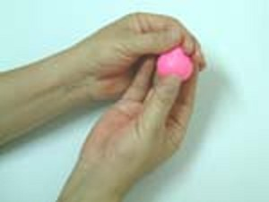 |
| Roll: Roll the basic sheet shape or strip shape dough into few rounds and get the figure we need such as a sea wave and cloud. |
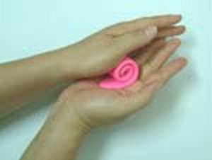 |
| Clip: Put the primary little dot shape element to attach to a spare part or component tightly. We usually use the method of pushing, pressing and filling to make it more fixed and sturdy to avoid their falling out. This method applies to things such as eyes and bead flower. |
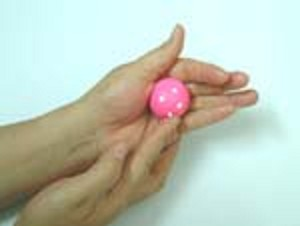 |
Paste: Put the sheet shape primary element on to cover the spare part or component and to produce the effect of overlay and wrapping. Normally, we need to mop up the whole thing or a part of the thing, to make it firmer, such as cloth, and color changing on an animal stomach. |
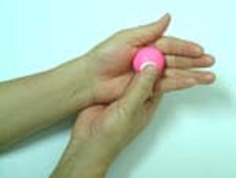 |
Stick: Combine some spare parts with a new spare part, or assemble some spare parts into a complete work. Normally, there are three methods as follows: “Dough stick”: Use the stickiness of dough to directly stick to the spare part, “Insert stick”: use bamboo stick or iron wire to connect spare parts, “Glue stick”: use glue and super glue to connect. |
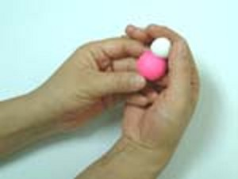 |
Wrap: When making bigger works, use proper stuffing materials to be wrapped inside the dough to save a big amount of dough material. The stuffing materials can be roughly divided into natural materials (such as wood, and stone), environmentally friendly materials (such as ceramics and plastic), and other materials (such as paper and cloth). In principle, waterproof materials are better, and light top and heavy bottom is better. |
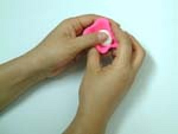 |
Tool Technique: [Note 4]
| Roll: Use cylinder shape stick, such as face stick or pen pole, to evenly press the dough into a flat figure. |
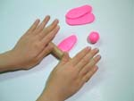 |
Press: Use tools with cusp (such as fine workmanship stick or comb) or fine and thin plane (such as the back of art knife blade or the back of plastic ruler) or pipe, stick, and board with specific shape (such as, round shape, angular shape, ㄇshape, ㄥshape, wave shape or diamond plate) to directly press out the lines or patterns we need. |
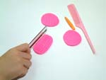 |
| Wipe: In the gap of connection between two or more pieces of dough, use a fine workmanship stick to continue to push back and forth, and apply to remove the lines and get the result of a complete merge. |
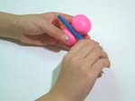 |
| Cut: For parts, such as sheep and strip pieces, use an art knife or round knife to cut the dough. |
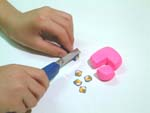 |
Shear: When some modeling dough needs to be partially or completely separated, such as an animal’s mouth and petals, use scissors to shear the dough. |
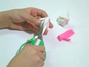 |
Drill: When some modeling dough needs the effect of drilled holes, such as a necklace and earrings, use a drilling stick from top to bottom, gradually spinning the stick to penetrate the dough to the end, and make the holes we need.
|
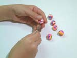 |
| Scrape: Put dough on palm or other planes, use hand to push it into fine and thin flat shape, and use a sharp knife, such as a fine craftsmanship knife or scraper, to follow the edge of the dough and scrape up piece by piece, to make the dough decorated with a flower-like pattern. This technique is normally used in the figure of a lawn and animal’s woolpack. |
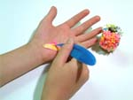 |
Paint: Use paintbrush to soak with water or oil paint to draw various patterns on work, or paint the color we need. |
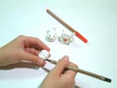 |
Dough Materials: [Note 4]
• All-purpose flour: Soft and hard property, and is a major material used for dough
• Sticky rice powder: Strong stickiness and used to enhance dough toughness.
• Salt: Keeps dough soft, and keeps the water inside the dough longer.
• Coloring materials: Changes white dough to be other colors such as yellow, red, blue, green, peach, and black.
• Alums: Used for moisture and insect prevention (optional)
• Preservative: Used for water-based ones. Also used to prevent from being moldy (optional)
• Clean water: Used to temper all the materials above Making Steps: [Note 4]
1. First blend all-purpose flour with sticky rice powder in the ratio of 4:1 (depending on the need of stickiness, you can adjust the ratio), and put in stainless steel kettle to evenly stir.
2. Add water into the kettle and stir it into a mud of flour. Make dough a little bit harder than the dough produced by steam-style flour blending.
3. Take out the blended dough and put it on a board or table, and use both hand to continue to rub it. Try its hardness, and if too hard. Then add more water to rub it and make it softer. If too soft, add the same ratio of flour and rice powder to rub it and make it harder. When the dough reaches a proper hardness, make palm-sized round dough balls for use.
4. Prepare a stainless steel kettle and put in the proper water to boil. When the water is boiling, put the round-shaped dough in to cook until well cooked.
5. Take out well-cooked pie and put it at room temperature to cool it down. When the temperature is a little bit higher than room temperature, cut it into pieces (the more smashed the better). Add proper salt, Alums (optional) and water-based preservatives (optional) into the cut pieces, and rub it evenly when it is still hot. When it cools down, it becomes useable dough.
6. When the dough cools down (easier to be colored), add in water-based color material. After stirring and rubbing evenly, it becomes colored dough.
Dough Features:
1. Rich color
2. Smaller size, and easy to be carried.
3. Cheap materials, and production cost is lower. After long-term research, today’s dough dolls do not go moldy, crack, change shape, or lose color, so tourists like it, and they are good gifts to send to family. When foreign tourists visit the production of dough dolls, they all greatly admire and appraise the masters’ skills and the vivid dolls produced. They call these dolls “Chinese sculptures”. [Note 1]
Comparison of Dough Materials: [Note 7]
Usage/Materials
|
Today’s Resin Soil
(Good for molding work use)
|
Traditional materials
(Good for educational use)
|
Stickiness |
Good |
Good |
|
Splendid |
Normal |
Drying Speed |
Quick (not good for beginner) |
Slow (Good for beginner) |
Work Preservation |
Forever |
About 2 months
(Usually sprayed with transparent paint)
|
Safety |
Contain big amount of chemicals |
Can use eatable colorant, high safety. |
From |
Chemical factories |
Do it yourself, contains traditional values |
In order to preserve traditional skills, Teacher Huang chose to use traditional materials.
Reference: (Except the notes, the text and pictures on these pages were based on interview transcriptions, photographs and writing taken by the project team.)
Note1: http://baike.baidu.com/view/225814.htm
Note2: http://www.mingtong.com.tw/art/
Note3: http://taiwanpedia.culture.tw/web/content?ID=19362
Note4: http://www.wu-art.com.tw/stock.htm
Note5: http://www.ntcri.gov.tw/Kids/Story/Content.aspx?Para=1
Note6: http://www.fromheart.com.tw/mbantreef.asp?BBanNo=I&MBanNo=I07
Note7: http://tw.myblog.yahoo.com/terrierwu/article?mid=53&sc=1

|